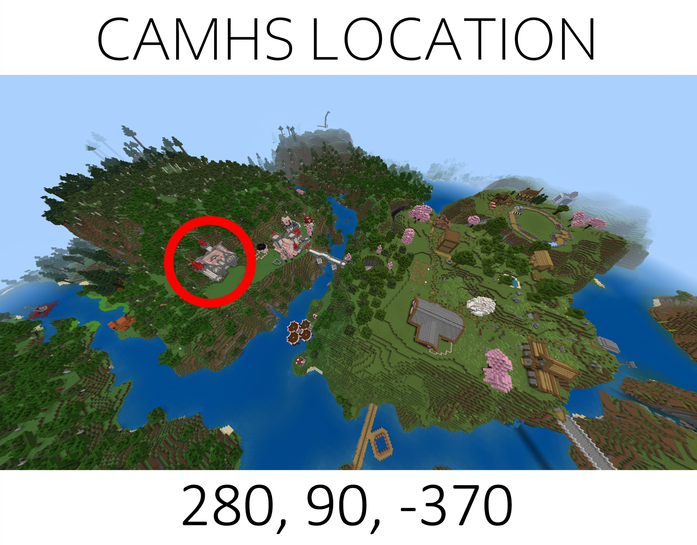
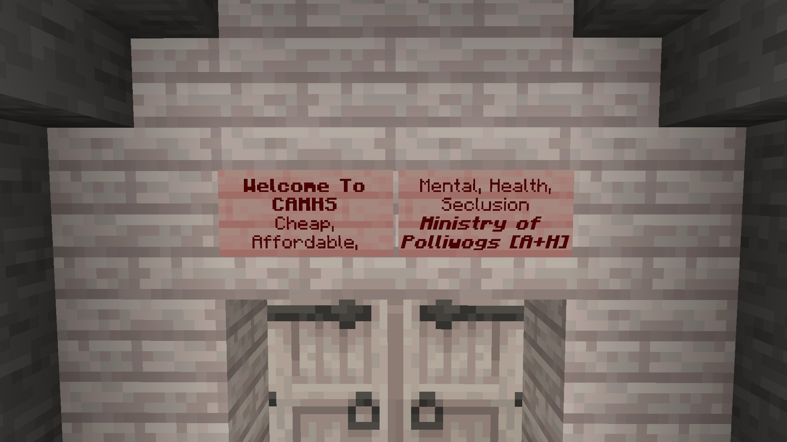

Where to find us!
To get to CAMHS from spawn, travel through the Cherry Grove Biome, past the Nether Sword and over the bridge,
then make your way past the train station and by Beep.Co®, cross the second bridge and make your way just past the castle!
or just use these coordinates - 280, 90, -370

Entrance
You will know if you have made it to the correct building if you see these signs!
NOTICE, do not enter unless staff are inside (and before the grand opening)
